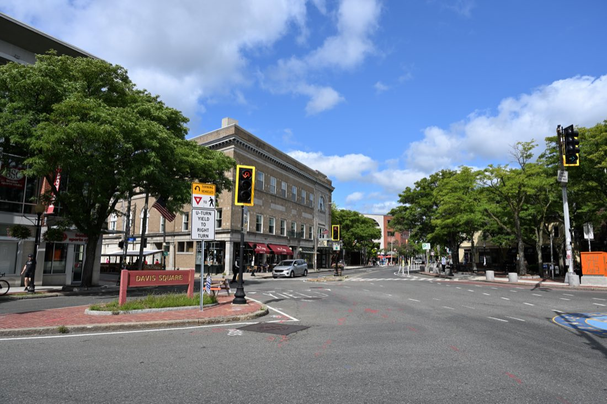

Boston has a strange relationship with coffee. Dunkin' was founded in Quincy, ten minutes down the Red Line, and there is still a store every four blocks. But the city also produced George Howell, whose Coffee Connection shops in the 1970s and 80s were among the first places in America to sell single-origin beans, and whose name is now on one of the best cafes in Boston. Somewhere between those two poles is a real cafe culture: Italian espresso bars on Hanover Street that have not changed since the 1930s, bakeries with lines out the door for sticky buns, and a generation of roasters in Cambridge and Somerville pulling shots that would hold up anywhere.
This guide covers 18 of the best cafes in Boston and Cambridge, grouped by neighborhood so you can find one near wherever you are. For each we give the address, the nearest T stop, what it is known for, and an honest read on laptop-friendliness, because "coffee shop" in Boston can mean a standing-room espresso bar or a room full of grad students who have been there since 9am, and you want to know which before you walk in.
A note on hours and prices: most of these open early and close mid-afternoon, and a few change hours by season. Where we are not sure, we say check before you go. A cappuccino at most of them is somewhere between $4.50 and $6; the North End is cheaper.
The short answer
The 10 best cafes in Boston
01
Downtown, Downtown Crossing and the Leather District
Downtown Boston is where the serious coffee is. Three of the best espresso bars in the city are within a ten-minute walk of each other, and all three are a short stroll from Boston Common and the Freedom Trail.

George Howell Coffee
George Howell is the closest thing Boston has to a coffee founding father. His Coffee Connection cafes, starting in Harvard Square in 1975, taught the city what a light-roast single origin tasted like, and after he sold the chain in 1994 he spent years working with farmers before opening under his own name. The cafe inside the Godfrey Hotel is the flagship: a long marble bar, a wall of beans with the farm and harvest date printed on every bag, and staff who will talk you through a pour-over of a Kenyan or a Guatemalan for as long as you like. The espresso is excellent, but this is the place to order a cup of black filter coffee and understand why people care.
There is a second, smaller counter inside the Boston Public Market at 100 Hanover Street, a few steps from Haymarket station, which is useful on a Freedom Trail day.
Gracenote Coffee
Gracenote is a closet-sized espresso bar on a quiet street between South Station and Chinatown, and for many Boston coffee people it is simply the best in the city. The roastery started in Somerville, the beans are roasted light and sold to cafes all over New England, and the two-group machine on the counter here is worked by people who take the shot as seriously as any bartender takes a cocktail. There are a couple of stools and a bench outside, and that is it. Order the espresso, or a cortado, drink it at the counter, and go.
Ogawa Coffee
Ogawa is a Kyoto roaster, and this was its first cafe outside Japan when it opened in 2015. The room is calm in a way few downtown places are: blond wood, a stepped seating area that looks down on the bar like a small amphitheater, and baristas who have won Japanese latte art championships and pour like it. The coffee is roasted a shade darker than the Boston third-wave norm, which makes the lattes and the iced coffee particularly good. There is a small Japanese-leaning food menu of sandwiches and sweets.
It is a block from the Old South Meeting House and two from the Old State House, so it is the natural coffee stop for anyone doing the Freedom Trail.
Thinking Cup
Thinking Cup was one of the first Boston cafes to serve Stumptown, the Portland roaster, and it is still the one to send someone to when they want a reliably good cappuccino across the street from Boston Common. The Tremont Street original is narrow, dark-wood and always full; the Hanover Street branch in the North End (236 Hanover St) and the Newbury Street branch (85 Newbury St) are both a little roomier. The pastries and sandwiches are better than they need to be. Working here is possible on a weekday afternoon, but it is a cafe first and a coworking space never.
02
Back Bay, Fenway and Beacon Hill
The cafes on this side of the Common are bigger and more comfortable, and they double as the best places to sit for an hour after a walk down Newbury Street or Charles Street.

Tatte Bakery & Café
Tatte started as a single bakery in Brookline run by Tzurit Or, who came from Israel, and it is now the cafe people in Boston have strong opinions about because there are so many of them. Ignore the debate; the food is genuinely good. The shakshuka is the signature, the pistachio croissant and the halva brownie are the pastries to order, and the coffee, roasted for them, is better than most chain cafes manage. The Charles Street location, with its black-and-white tiles and marble tables, is the prettiest, and it sits at the foot of Beacon Hill where you will want to be anyway.
Pavement Coffeehouse
Pavement is Boston's homegrown answer to the question "where can I sit with a laptop and a decent coffee for three hours without anyone minding". There are seven or so locations, all near universities, all with long tables, outlets and a house-roasted coffee that is solid rather than spectacular. The bagels are the real draw: boiled and baked in house, they are the best in the city and the egg-and-cheese on one is a proper breakfast. The Boylston Street original near Berklee is the most characterful, with the most students; the Fenway one on Boylston near the ballpark has the most space.
Blue Bottle Coffee
Blue Bottle arrived from Oakland with its usual minimalism: white walls, a short menu, no Wi-Fi and no outlets, and a New Orleans-style iced coffee that is still the thing to order. The Newbury Street cafe is in a brownstone basement and is a good place to reset halfway down the shopping street. The Harvard Square one, on a quiet corner off Mass Ave, is bigger and a pleasant place to read. The coffee is consistent rather than adventurous, which is sometimes exactly what you want.
Blackbird Doughnuts
Blackbird is a doughnut shop, not a cafe in the sitting sense, but its brioche doughnuts are the best in Boston and the coffee it serves alongside them is good enough to make the walk from Back Bay worthwhile. The bismarck, the cinnamon sugar and whatever seasonal cake doughnut is on the board are the ones to get. There is a bench or two. Take yours across the street to the little park on Tremont, or walk it into the South End.
03
South End and Fort Point
The South End is Boston's best cafe neighborhood, full stop. Brownstone streets, a lot of people who work from home, and three cafes within fifteen minutes of each other that would be the best in most cities.

Render Coffee
Render is what most people picture when they say "a good neighborhood coffee shop": a bright room on Columbus Avenue, a back patio that is one of the best-kept secrets in the South End, a rotating roster of guest roasters on the espresso machine, and a breakfast sandwich menu with real thought behind it. It is laptop-friendly to a fault on weekdays, and the staff are the kind who remember your order. In summer the patio is the place to be; in winter the front windows get the afternoon light.
Flour Bakery + Café
Joanne Chang opened the first Flour on Washington Street in 2000, and the sticky bun she serves there has since been on national television, in her cookbooks, and in the hands of nearly everyone who has lived in Boston. It deserves the reputation: brioche, brown-sugar goo, toasted pecans, and served warm if you time it right. The rest of the pastry case is just as strong, the lunch sandwiches are the South End's default office lunch, and the coffee is dependable. The Fort Point location on Farnsworth Street is the one to use if you are walking the Seaport or heading to the ICA.
Jaho Coffee Roaster & Wine Bar
Jaho started in Salem, roasts its own beans, and runs the biggest cafe room in the South End: high ceilings, long tables, a full espresso bar and, from the afternoon on, wine and beer. It is one of the very few Boston coffee shops open late, which makes it the place for a 7pm work session or a low-key first date that involves coffee rather than cocktails. The coffee is good, the pastries are fine, and the nitro cold brew on tap is what regulars order in summer.
The South End is also where you will find several of Boston's best brunch spots.
04
The North End: Italian espresso the old way
North End cafes are not third-wave. They are Italian espresso bars that have been open since before the Depression, with espresso for a couple of dollars, cappuccino in a real cup and pastry in a glass case. Go for the room as much as the coffee.

Caffè Vittoria
Caffè Vittoria opened in 1929 and claims to be the first Italian cafe in Boston, and there is no reason to doubt it. Inside it is all pressed-tin ceilings, marble, antique espresso machines lining the walls and a long line of people waiting for cannoli. The espresso is dark, Italian-roast and correct. Order a cappuccino and a cannoli or a slice of ricotta pie, sit in the back or downstairs, and stay as long as you like. It is open late, which makes it the best place in the neighborhood for dessert after a Hanover Street dinner. Vittoria's cannoli hold their own in the neighborhood's endless cannoli debate.
Polcari's Coffee
Polcari's is not a cafe in the sit-down sense; it is a coffee, spice and dry-goods shop that has been on the corner of Salem and Parmenter since 1932, and it is one of the last of its kind. Sacks of beans, jars of spices, barrels of legumes, and a ceiling hung with the kinds of things that used to be in every Italian grocery. Buy a pound of the house espresso blend to take home, and if it is summer, get the lemon slush from the machine by the door, which locals will tell you is the real reason to come.
Thinking Cup, Hanover Street
If you want a modern pour-over or a flat white in the North End rather than an Italian shot, this is the branch of Thinking Cup to use. It is bigger than the Tremont Street original and is a good place to wait out a pastry line at Modern or Mike's across the street. The full North End neighborhood guide covers the rest.
05
Cambridge: Harvard Square, Central, Inman and East Cambridge
Cambridge has more cafes per square mile than anywhere in Greater Boston, most of them full of people writing dissertations. These are the ones worth crossing the river for.

Broadsheet Coffee Roasters
Broadsheet is a roastery and cafe in a big, light-filled room on Kirkland Street, and it is the best all-round coffee shop in Cambridge. The roasting happens in the back, the beans are sold at the front, the espresso is bright and well-pulled, and the room is full of long tables where nobody minds a laptop. The breakfast menu is unusually good for a roaster: eggs, toast, a very good breakfast sandwich. It is between Harvard Square and Inman Square, which puts it on the walk to the Harvard Art Museums.
1369 Coffee House
1369 has been the coffee house of Central Square since 1993, and walking in feels like the 1990s in the best way: mismatched chairs, local art on the walls, a bulletin board of flyers, and the low rumble of people reading and talking. The coffee is fair-trade and better than the surroundings suggest, the iced coffee is a summer institution, and the scones and muffins are baked in house. Both locations are laptop-friendly; the Inman Square original is quieter, the Central Square one is more of a scene.
Curio Coffee
Curio is tiny, and it does two things extremely well: coffee from rotating small roasters, and Liège waffles, the dense, caramelized Belgian kind, made to order on an iron behind the counter. The combination is enough to have made a small, unglamorous stretch of Cambridge Street a destination. Get the waffle plain, or with speculoos, and a cortado. It is a fifteen-minute walk from Kendall Square and a good stop on the way to the CambridgeSide waterfront.
Blue Bottle, Harvard Square
The Harvard Square Blue Bottle occupies a handsome corner building on Bow Street, a block from the Harvard Lampoon castle, and it is the calmest place in the Square to sit with a book and a New Orleans iced coffee. See the Back Bay entry above for the rest. Our Harvard Square guide covers the bookstores, the Yard and the rest of the neighborhood.
06
Somerville: Davis Square and Porter

Diesel Café
Diesel has been the living room of Davis Square since 1999: a big garage of a room with pool tables at the back, booths, a long communal table, art on the walls and a crowd that ranges from Tufts students to people who have been coming since it opened. The coffee is roasted by its sister company, Forge, and is very good, the sandwiches are named after neighborhood things, and it stays open into the evening, which almost nothing else on this list does. If you need to work for four hours, this is where you go. If you want to meet a friend and shoot pool with a latte, also here.
Forge Baking Company
Forge is the bakery and roastery behind Diesel, and its own cafe on Somerville Avenue is worth the walk from Porter Square. The pastry case is the draw: croissants, morning buns, the seasonal fruit danishes. Next door, Forge Ice Cream Bar serves house-made ice cream and affogatos, which makes this the rare cafe that works at 8am and at 8pm. The room is big and the coffee is the same as at Diesel.
Davis Square is also home to some of the friendliest bars in the area once the coffee wears off.
FAQ
Best cafes in Boston: common questions
What is the best cafe in Boston?
For coffee alone, George Howell at the Godfrey Hotel downtown is the most respected cafe in Boston; Howell founded the original Coffee Connection chain and helped invent the modern specialty coffee movement. For the full cafe experience of food, room and atmosphere, Tatte on Charles Street in Beacon Hill is the one most locals send visitors to.
Which Boston cafes are best for working on a laptop?
Diesel Cafe in Davis Square, Broadsheet in Cambridge, Render in the South End, Pavement on Boylston Street and 1369 in Central Square are the most reliably laptop-friendly. Blue Bottle, Gracenote and Caffe Vittoria are not: they have no Wi-Fi, no seating, or both.
Where is the best espresso in Boston?
Gracenote Coffee on Lincoln Street in the Leather District pulls the most precise espresso in the city, followed closely by George Howell. For a classic Italian-style shot in a room that has not changed since 1929, go to Caffe Vittoria on Hanover Street in the North End.
Does Boston have good coffee shops in the North End?
Yes, but they are a different style. The North End cafes such as Caffe Vittoria and Caffe Paradiso serve Italian espresso, cappuccino and pastry in old-school rooms, and Polcari's on Salem Street has sold coffee beans by the pound since 1932. For third-wave pour-over, you will need to walk to Thinking Cup on Hanover Street or George Howell in the Boston Public Market.
Which cafes in Boston open earliest and stay open latest?
Most Boston cafes open between 6:30am and 8am and close between 4pm and 6pm. Jaho in the South End and Caffe Vittoria in the North End are the exceptions that stay open late into the evening; Diesel Cafe in Davis Square is open until around 9pm most nights. Check hours before you go, because they change seasonally.
Are Boston cafes cash only?
Almost all Boston cafes take cards, and many newer ones are card only. The old North End cafes are the exception: Caffe Vittoria and Polcari's have traditionally preferred cash, so bring some if you are heading to Hanover or Salem Street.